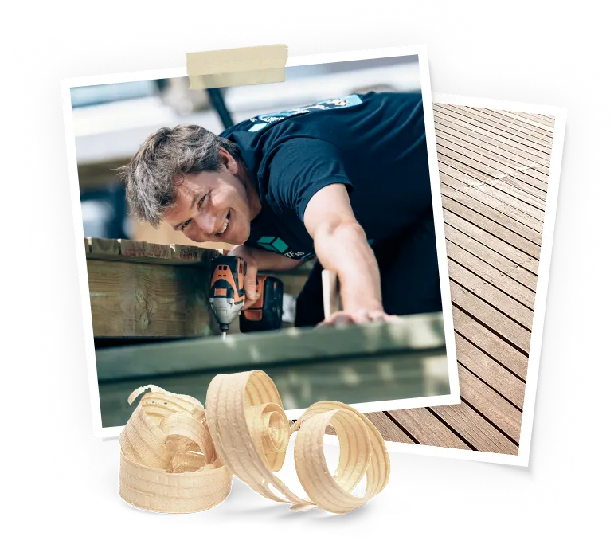
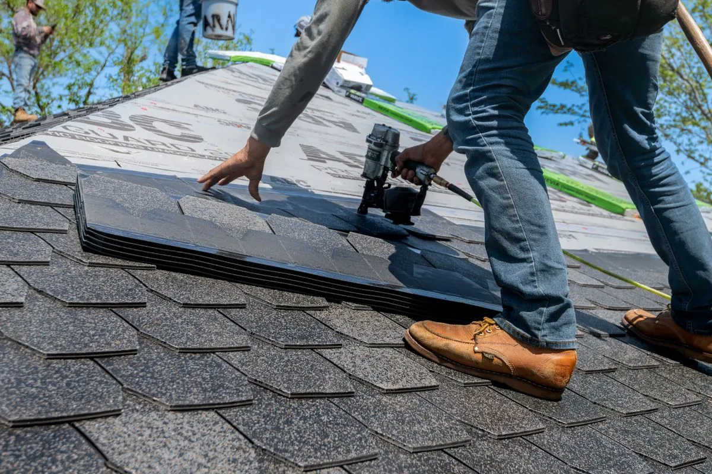

Takbyte
Komplett byte av yttertak när konstruktion, ytskikt och detaljer behöver förnyas för att ge långsiktigt skydd.
- Nytt underlag och nya detaljer.
- Materialval utifrån husets behov.
- Slutkontroll innan avslut.
Geal Entreprenad AB hjälper villaägare, BRF och fastighetsägare med takbyte, takrenovering och löpande takservice i hela Storstockholm. Vårt mål är att leverera tydliga offerter, pålitligt utförande och resultat som håller i det svenska klimatet.

Att anlita en takläggare i Stockholm handlar om mer än att bara byta ett ytskikt. Ett tak påverkar hela byggnadens skydd mot fukt, temperaturväxlingar, vind och slitage. När ett tak fungerar som det ska märks det knappt i vardagen, men när problem uppstår kan konsekvenserna bli kostsamma. Därför är det viktigt att arbeta med tydlig planering, rätt material och noggrant utförande.
Geal Entreprenad AB hjälper villaägare, BRF och fastighetsägare med takprojekt i hela Stockholmsregionen. Vi arbetar med allt från kompletta takbyten till takrenovering, plåtarbeten och inspektioner. Vårt fokus ligger på att ge varje kund en tydlig bild av nuläget, rekommenderad åtgärd och realistisk kostnadsnivå.
Många som söker efter takläggare vill först förstå vad som faktiskt behöver göras. Behövs ett helt takbyte eller räcker en riktad renovering? Är plåttak ett bättre alternativ än traditionella pannor? Hur mycket kan man vinna på att tvätta eller måla taket i tid? På den här sidan har vi delat upp svaren i tydliga sektioner så att du enklare kan navigera efter det som är relevant för ditt projekt.
Om du vill fördjupa dig ytterligare hittar du fler guider på vår artikelsida. Där beskriver vi bland annat hur du jämför offerter, vad som påverkar ett taks livslängd och vilka tecken som visar att en åtgärd bör planeras i god tid.
Den här sidans upplägg är medvetet strukturerat i kortare avsnitt i stället för ett enda långt textblock. Det gör det lättare att snabbt hitta rätt ämne, oavsett om du just nu funderar på pris, område, materialval eller nästa steg i processen. Samtidigt ger det en tydligare bild av hur olika delar av ett takprojekt hänger ihop.
För den som söker en seriös och lokal entreprenör är målet med den här sidan att ge ett lugnare beslutsunderlag. Du ska snabbt kunna avgöra vilka delar som gäller just din fastighet och sedan gå vidare till offert eller fördjupning i artiklar när det passar dig.
Det ger en tryggare start för hela projektet.
När du planerar ett takprojekt är det viktigt att skilja mellan olika typer av åtgärder. Ett tryggt resultat handlar inte bara om att göra något snabbt, utan om att välja rätt tjänst i rätt läge. Nedan ser du de vanligaste tjänsterna vi utför i Stockholm.
Komplett byte av yttertak när konstruktion, ytskikt och detaljer behöver förnyas för att ge långsiktigt skydd.
Riktade åtgärder när stora delar av taket fungerar men utsatta delar behöver repareras eller förbättras.
Nya plåtarbeten och reparationer med fokus på precision, täthet och hållbar avvattning.
För vissa plåttak kan målning vara en bra åtgärd när ytan behöver nytt skydd men konstruktionen fortfarande är i gott skick.
Ett bra första steg när du vill veta vad taket faktiskt behöver och hur projektet bör planeras.
Skonsam tvätt av takytor när mossa, smuts och påväxt bör tas bort utan onödigt slitage.
Ett takbyte blir aktuellt när taket nått slutet av sin tekniska livslängd eller när skadorna är så pass omfattande att löpande reparationer inte längre är ett lönsamt alternativ. I Stockholm ser vi ofta att tak som utsatts för långvarig fukt, isbildning eller tidigare bristfälliga åtgärder till slut behöver bytas i sin helhet för att ge ett pålitligt skydd.
Vid ett takbyte ser vi inte enbart till synliga pannor eller plåtdelar. Vi kontrollerar underlag, infästningar, beslag, avvattning och anslutningar runt skorsten, takfönster och genomföringar. Det gör att resultatet blir mer långsiktigt och minskar risken för att gamla svagheter lever kvar under det nya taket.
Vår arbetsmodell för takbyte bygger på tydlighet. Du får information om materialval, arbetsordning och tidsram innan projektet startar. Vi planerar även logistiken runt fastigheten så att arbetet kan genomföras så smidigt som möjligt. När takbytet är klart ska du som kund veta exakt vad som gjorts och varför.
För kunder som vill jämföra flera material går vi igenom skillnader i livslängd, underhållsbehov och uttryck. Det gäller exempelvis hur olika pannprofiler beter sig i ett utsatt läge eller när ett modernt plåtalternativ kan vara mer lämpligt än traditionella lösningar. På så sätt blir valet mer strategiskt och mindre baserat på magkänsla.
För dig som jämför olika lösningar kan det vara bra att läsa mer i artiklar om takbyte och planering.
Få offert
Takrenovering passar när takets grundkonstruktion fortfarande är stabil men vissa delar behöver åtgärdas. Det kan handla om slitna beslag, enstaka skadade pannor, problem runt genomföringar eller fukttecken som uppstått i begränsade delar av taket. I dessa fall är en riktad renovering ofta ett smart sätt att förlänga takets liv utan att direkt gå till ett fullständigt byte.
Vi börjar alltid med att skilja på kosmetiskt slitage och faktiska riskpunkter. Ett tak kan se slitet ut men fortfarande fungera tekniskt bra, samtidigt som ett relativt snyggt tak i själva verket har problem under ytan. Därför är inspektionen avgörande. Efter genomgången ger vi en prioriterad åtgärdsplan så att du kan se vad som bör göras nu och vad som kan planeras längre fram.
En tydlig renoveringsplan ger bättre kontroll på både kostnad och resultat. Du slipper onödiga ingrepp och kan samtidigt känna dig trygg med att de viktiga delarna tas om hand i tid.
Om du vill förstå skillnaden mellan takrenovering och takbyte har vi mer fördjupning i våra guider.
Plåttak är ett vanligt val i Stockholm tack vare sin låga vikt, goda livslängd och sitt rena uttryck. Samtidigt ställer plåtarbeten höga krav på precision. Små fel i infästning, skarvar eller anslutningar kan med tiden ge upphov till läckage eller korrosionsproblem. Därför behöver plåttak alltid projekteras och utföras med stor noggrannhet.
Vi hjälper både kunder som vill installera nytt plåttak och fastighetsägare som behöver renovera eller förbättra ett befintligt system. I varje projekt tittar vi på takets lutning, avvattning, detaljlösningar och hur materialet kommer att fungera på lång sikt i det lokala klimatet.
Ett väl utfört plåttak ger inte bara en tät konstruktion utan också en lösning som är enkel att underhålla och följa upp. Vi dokumenterar arbetet och ger dig råd kring skötsel, vilket gör det enklare att planera service och framtida insatser.
Kontakta ossBesiktning är en av de viktigaste delarna i ett tryggt takprojekt. Utan en korrekt bedömning är det svårt att veta om ett problem kräver akuta insatser eller om det kan planeras längre fram. Vi ser ofta att kunder kontaktar oss efter att ha upptäckt mindre symptom, exempelvis en missfärgning i undertak, lösa pannor eller mossa som börjat fästa på utsatta ytor. En besiktning ger svar på om detta är ett isolerat problem eller ett tecken på större belastning.
Under besiktningen kontrollerar vi takytor, plåtdetaljer, genomföringar, takavvattning och synliga riskpunkter. Vi gör en samlad bedömning av skick, funktion och rekommenderad åtgärdsnivå. För många kunder är detta det bästa sättet att skapa ordning och prioritera rätt innan beslut om större investeringar fattas.
En tydlig besiktning minskar osäkerheten. Du får en konkret bild av nuläget och slipper gissa dig fram. Om du redan nu vill läsa mer om kontrollpunkter och vanliga fynd kan du besöka vår artikelbank.
Besiktning är också ett bra verktyg för långsiktig planering. Även om taket inte behöver åtgärdas direkt kan en professionell genomgång visa vilka delar som bör följas upp nästa säsong och vilka kostnader som kan behöva reserveras framöver. Det gör det enklare att undvika paniklösningar och att arbeta mer proaktivt med fastighetens underhåll.
Prisbilden för takarbete i Stockholm beror på flera faktorer. Takets storlek, material, taklutning, tillgänglighet och nuvarande skick påverkar kostnaden, liksom behov av plåtarbeten, underlag, ställning eller andra kringåtgärder. Därför är det sällan meningsfullt att ge ett exakt pris utan att först ha bedömt fastigheten.
Vi arbetar med tydliga offerter där du ser omfattning, material och planerad arbetsgång. Om något riskerar att tillkomma löpande ska det framgå redan från början. På så sätt blir det lättare att jämföra alternativ och fatta beslut utifrån verklig nytta, inte bara ett lågt startpris.
För vissa kunder är det mest relevant att få en helhetslösning direkt. För andra kan det vara bättre att dela upp åtgärderna i steg. Vi hjälper till att strukturera dessa val så att du får både ekonomisk kontroll och en tekniskt sund plan framåt.
I praktiken betyder det att vi inte bara svarar på frågan vad kostar det, utan också varför kostar det som det gör. Vi visar vilka moment som driver priset och vilka val som kan justeras utan att tumma på funktion och säkerhet. Den typen av tydlighet är extra viktig när takprojekt konkurrerar med andra investeringar i fastigheten.
Det som skiljer ett tryggt takprojekt från ett osäkert är sällan en enda detalj. Ofta handlar det om hur väl hela processen hänger ihop. Vi arbetar med tydlig kommunikation, realistiska tidsplaner och strukturerad uppföljning, vilket gör att du som kund vet vad som pågår i varje fas.
Vi ser inte takarbete som ett standardpaket utan som ett uppdrag som ska anpassas efter byggnad, skick och målbild. Därför tar vi tid att förklara alternativen och motivera våra rekommendationer. Det skapar bättre beslut och minskar risken för onödiga åtgärder.
Många kunder uppskattar att vi kombinerar hantverk med ordning. Det betyder tydliga besked, bra dokumentation och ett arbetssätt som fungerar även i större eller mer komplexa projekt.
För oss är det viktigt att ett projekt inte bara blir tekniskt korrekt utan också lätt att följa för kunden. Det handlar om tydliga kontaktvägar, realistiska besked och att frågor besvaras löpande. Den arbetsformen ger ofta ett lugnare projekt för alla parter och skapar förutsättningar för ett bättre slutresultat.
Du ser vad som ingår, vad som rekommenderas och hur projektet bör läggas upp.
Vi arbetar i Stockholm och förstår vanliga taktyper och belastningar i området.
Vi anpassar material och detaljlösningar efter funktion, livslängd och underhåll.
Du får tydliga besked tidigt, vilket gör det lättare att planera nästa steg.
Vi håller processen enkel. Målet är att du snabbt ska få en tydlig bedömning, en begriplig offert och ett utförande som går att följa utan onödig osäkerhet.
Du kontaktar oss med kort information om fastigheten och vad du vill ha hjälp med.
Vi bedömer takets skick och går igenom vilka åtgärder som är mest relevanta.
Du får ett tydligt underlag med omfattning, rekommenderad lösning och preliminär plan.
Arbetet genomförs enligt plan och avslutas med genomgång av resultatet.
Vi arbetar i stora delar av Stockholmsområdet och har erfarenhet av både innerstad, villaområden och närliggande kommuner. Lokalkännedom spelar stor roll i takprojekt eftersom byggnadstyper, vindutsatthet och vanligt förekommande skador kan skilja sig mellan olika områden.
Vanliga uppdrag utför vi i Stockholm innerstad, Sundbyberg, Solna, Bromma, Nacka, Täby, Danderyd, Lidingö, Sollentuna och Järfälla. Vi arbetar också i andra delar av regionen efter överenskommelse. Om du är osäker på om vi tar uppdrag i ditt område kan du alltid skicka en förfrågan så återkommer vi snabbt.
För dig som vill planera i god tid är det en fördel att ta kontakt tidigt, särskilt om projektet ska samordnas med annan renovering eller med fastighetens underhållsplan. Då blir det enklare att få en genomtänkt tidslinje och en budget som stämmer med verkliga behov.
Oavsett om du finns i centrala Stockholm eller i ett yttre villaområde arbetar vi med samma mål: att ge en tydlig rekommendation och ett upplägg som fungerar i praktiken. Lokalkännedomen gör att vi snabbare kan bedöma typiska belastningar, vanliga byggnadsdetaljer och vilka lösningar som normalt ger längst livslängd i området.
Behöver du hjälp med takbyte, takrenovering, plåttak eller besiktning? Kontakta oss idag så återkommer vi med en tydlig offert och rekommendation för ditt tak.